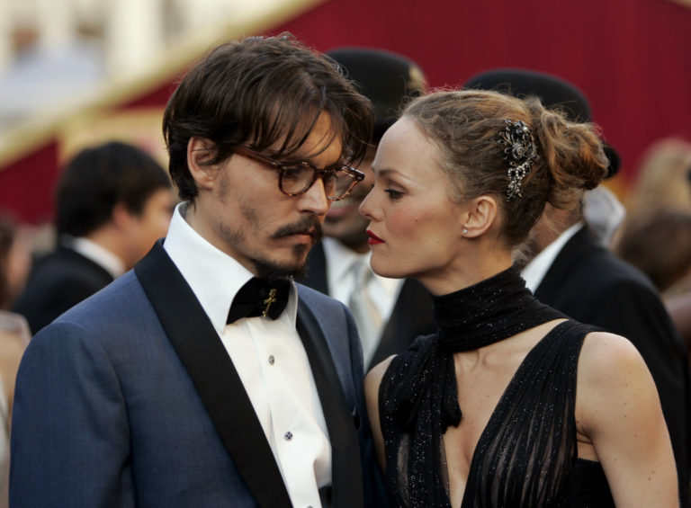

В 1983 году Джонни Депп начал встречаться с художницей Лори Энн Эллисон, они поженились в канун Рождества того же года. Развелись в 1985 году. В 1989 году начал встречаться с актрисой Дженнифер Грей. Их роман продлился недолго. С Вайноной Райдер Джонни был вместе с 1989 по 1993 годы. Пять месяцев они жили вместе, ещё через пять месяцев на её безымянном пальце появилось кольцо. Но их отношения закончились до того, как они успели пожениться. В 1994 году он начал встречаться с британской супермоделью Кейт Мосс. В 1998 году его новой возлюбленной стала Ванесса Паради, французская актриса и певица. У них родились двое детей — дочь Лили-Роуз Мелоди в мае 1999 и сын Джон Кристофер (Джек) Депп III в апреле 2002 года. 19 июня 2012 года публицист Деппа сделала заявление, что Депп и Паради расстались, в последние два года Депп и Паради не посещали публичные мероприятия вместе. Позднее оба актёра подтвердили разрыв, назвав его добровольным, и заявили, что остались друзьями. Причиной разрыва стали отношения Деппа с партнёршей по фильму «Ромовый дневник» Эмбер Хёрд, начавшиеся в 2011 году. В январе 2014 года он сделал ей предложение. 3 февраля 2015 года Депп и Хёрд поженились, но уже в мае следующего года Эмбер подала на развод, сославшись на непримиримые разногласия. Это была особенно тяжёлая неделя для Деппа, поскольку его мать умерла за три дня до этого. В январе 2017 года развод был официально оформлен. В 2004 году Джонни Депп купил остров Little Hall’s Pond Cay в Багамском архипелаге. Один раз канал CNN сообщил о смерти актёра в автокатастрофе. Но в итоге оказалось, что «новость» была работой хакеров, взломавших сайт канала. У Деппа плохое зрение — он с детства плохо видит левым глазом, а на правый глаз он близорук, в связи с этим ему постоянно приходится носить очк. В апреле 2019 года стало известно о новой подруге Деппа — 24-летней танцовщице из Санкт-Петербурга Полине Глен, выступавшей в стиле гоу-гоу в различных заведениях Лос-Анджелеса с 2017 года. Пара рассталась в ноябре 2019 года, Глен не смогла справиться с тяжбами Деппа и Херд. 2 ноября 2020 года Джонни Депп проиграл в Высоком суде Лондона дело против британского таблоида The Sun, который он обвинял в клевете. Судья Высокого суда Лондона Эндрю Никол постановил, что обвинения в отношении Джонни Деппа, содержащиеся в статье The Sun, «в общей сущности верны»
